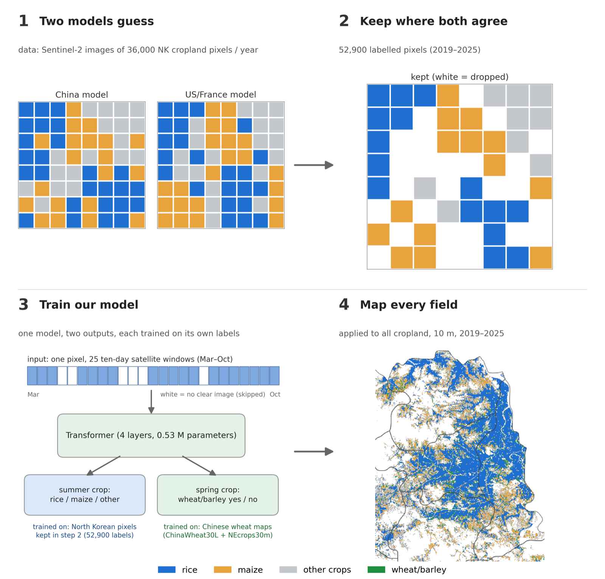

Mapping North Korean Agriculture from Satellite Imagery
Commissioned by the Ministry of Unification, with Prof. David Lobell and Prof. Jennifer Burney at Stanford. North Korea has no public field labels, so standard crop mapping cannot be trained there.
We combine two crop classifiers trained in other countries, keep the pixels where they agree, and self-train a small transformer on those labels. It maps rice, maize and wheat/barley at 10 m resolution across North and South Hwanghae for 2019–2025, and the area estimates are checked against official statistics.
- Funding
- Ministry of Unification · with Stanford University
- Period
- 2026
- Team
- Prof. Jihee Kim (PI, KAIST), with Prof. David Lobell and Prof. Jennifer Burney (Stanford)
- My role
- Crop classification, area estimation and county-level analysis.

WHY IT IS HARD
There are no public field labels for North Korea, so a crop classifier cannot be trained there directly, and models trained in other countries transfer imperfectly.
WHAT WE DID
- Two existing classifiers, one trained in China and one in the US and France, label Sentinel-2 pixels
- We keep the pixels where both agree as training labels
- A small transformer is trained on those labels and refined by self-training
- The model maps rice, maize and wheat/barley at 10 m across North and South Hwanghae, 2019–2025
HOW WE CHECK IT
With no field ground truth, accuracy is measured as agreement with independent estimates: national statistics, the Rural Development Administration, and other published crop maps.